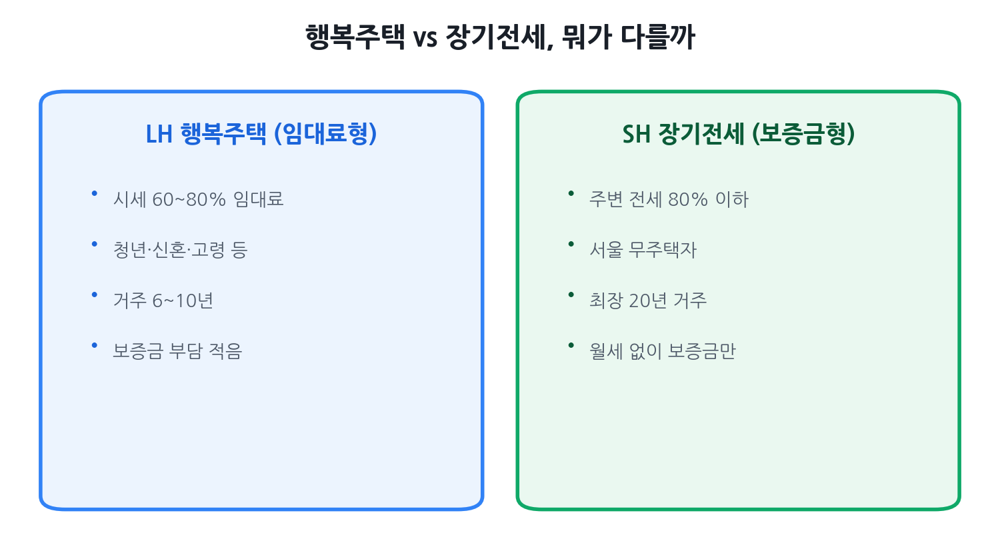

LH 행복주택 vs SH 장기전세,
뭐가 유리할까 2026
공공임대 두 가지를 두고 고민하는 분이 많습니다. 행복주택은 작은 돈으로 매달 월세를 내는 구조, 장기전세(미리내집 포함)는 목돈 보증금 하나로 오래 사는 구조입니다. 비슷해 보여도 자격 기준, 비용 구조, 거주 기간이 전혀 달라 본인 상황을 알고 골라야 합니다. 2026년 최신 기준으로 두 제도를 나란히 비교했습니다.
- 수도권 무주택자인데 공공임대가 처음이고 어디 신청할지 모르는 분
- 행복주택과 장기전세 중 어디가 더 저렴한지 따져보고 싶은 분
- 청년·신혼부부·고령자 중 본인이 어느 계층 자격에 드는지 확인하고 싶은 분
- 청약통장을 어떻게 활용할지, 신청 창구가 어디인지 궁금한 분

두 제도의 구조 차이 한눈에
행복주택과 장기전세는 둘 다 '공공임대주택'이지만 운영 주체와 자금 구조가 다릅니다.
- 행복주택은 LH(한국토지주택공사)나 지방공사가 직접 짓고 운영하는 임대료형(월세형) 공공임대입니다. 입주자는 소액 보증금 + 월 임대료를 냅니다. 전국에 공급되며, 청년·신혼부부·고령자 등 여러 계층을 대상으로 합니다.
- SH 장기전세주택은 서울주택도시공사(SH공사)가 공급하는 전세형 공공임대입니다. 입주자는 주변 전세시세의 80% 이하로 책정된 보증금 하나를 맡기고, 매달 임대료를 따로 내지 않습니다. 서울 거주자만 신청 가능합니다.
장기전세주택Ⅱ(미리내집)은 2024년 서울시가 도입한 신혼부부 특화 변형입니다. 저출생 대응 차원에서 자녀 출산 시 소득·자산 재심사 없이 최대 20년 거주를 보장하는 추가 혜택이 있습니다.
행복주택 — 자격·비용·거주 기간 상세
공급 대상 계층
행복주택은 입주 대상을 청년, 신혼부부·한부모가족, 고령자, 주거급여 수급자, 산단근로자 등으로 나눠 계층별로 자격을 달리 적용합니다. 일반 수도권 무주택자가 주로 해당하는 계층은 청년과 신혼부부입니다.
청년 계층 자격
- 나이: 만 19~39세 또는 소득 활동 합산 5년 이내 사회초년생
- 소득: 도시근로자 가구원수별 월평균 소득 100% 이하 (1인가구 120% 이하, 2인가구 110% 이하)
- 자산: 총자산 약 3억 3,100만 원 이하, 자동차 가액 약 3,557만 원 이하 (2026년 적용 기준; 공고별 확인 필요)
- 무주택: 본인 무주택 (세대 분리 여부에 따라 세대원 전체 기준 적용될 수 있음)
신혼부부·한부모가족 계층 자격
- 대상: 혼인 7년 이내 신혼부부, 예비 신혼부부, 만 6세 이하 자녀를 둔 한부모가족
- 소득: 도시근로자 월평균 소득 100% 이하 (맞벌이 120% 이하, 2인 가구 맞벌이 130% 이하)
- 자산: 총자산 약 3억 4,500만 원 이하, 자동차 가액 4,542만 원 이하 (2026년 적용 기준)
임대료 수준
행복주택의 임대료는 주변 시세의 60~80% 수준으로 책정됩니다. 소액 보증금에 월 임대료를 내는 구조이며, 보증금을 더 올리면 그만큼 월세를 낮출 수 있는 전환 방식도 허용됩니다. 단지·위치·전용면적에 따라 월 임대료 편차가 크기 때문에, 정확한 임대료는 LH청약플러스(apply.lh.or.kr)의 해당 공고문으로 확인해야 합니다.
거주 기간
2024년 10월 국토교통부가 입법예고한 개정안에 따르면, 청년·신혼부부 등 청년층의 행복주택 기본 최대 거주 기간이 기존 6년 → 10년으로 연장되고, 자녀가 있으면 최대 14년까지 거주가 가능해집니다. 법령 시행 후 신규 입주자부터 적용되므로, 입주 시점의 공고 기준을 반드시 확인하세요.
신청 방법
LH청약플러스(apply.lh.or.kr)에서 모집 공고를 확인하고 온라인으로 신청합니다. 지자체·지방공사 공급분은 각 지방공사 홈페이지를 통해 별도 신청합니다.
SH 장기전세·미리내집 — 자격·비용·거주 기간 상세
기본 자격 요건
- 거주지: 입주자 모집공고일 현재 서울특별시 거주자만 가능
- 무주택: 무주택 세대구성원 (세대원 전체 무주택)
- 자산: 부동산 총 2억 1,550만 원 이하, 자동차 4,542만 원 이하 (기본 장기전세 기준; 미리내집 등 특화형은 별도)
소득 기준 (전용면적별)
- 전용 60㎡ 이하: 도시근로자 가구원수별 월평균 소득 100% 이하 (신혼 맞벌이 180% 이하)
- 60㎡ 초과 85㎡ 이하: 120% 이하 (신혼 맞벌이 200% 이하)
- 85㎡ 초과: 150% 이하
보증금 수준
보증금은 인근·유사 단지 전세 계약 평균금액의 80% 이하로 책정됩니다. 서울 역세권 아파트 기준으로는 보증금 규모가 상당하며, 입주 시 보증금의 70%만 내고 나머지 30%는 분할 납부하는 제도(보증금 분할납부제)가 운영 중입니다. 또한 버팀목 전세대출 등 전세자금 대출로 보증금 일부를 마련하는 것도 가능합니다(대출 은행 심사 조건에 따라 다름).
거주 기간
2년 단위 재계약, 최장 20년 거주가 원칙입니다. 미리내집(장기전세Ⅱ)은 입주 중 자녀를 1명이라도 출산하면 소득·자산 증가에 관계없이 재심사 없이 20년 거주가 보장됩니다. 자녀 2명 이상이면 우선 매수청구권(구입 우선권)까지 부여됩니다.
신청 방법
SH 인터넷청약시스템(i-sh.co.kr)에서 모집 공고를 확인하고 온라인으로 신청합니다. 청약은 가점제로 운영되며, 세대주 나이, 서울시 거주 기간, 청약통장 납입 기간, 세대원 수, 미성년 자녀 수 등이 가점 항목입니다.
핵심 비교표
두 제도를 가장 자주 질문 받는 항목으로 나란히 정리했습니다.
| 항목 | LH 행복주택 | SH 장기전세 (기본형) | SH 장기전세Ⅱ (미리내집) |
|---|---|---|---|
| 운영 주체 | LH / 지방공사 | SH공사 | SH공사 |
| 공급 지역 | 전국 | 서울 | 서울 |
| 비용 구조 | 소액 보증금 + 월세 | 보증금 일시납 (월세 없음) | 보증금 일시납 (분할납부 가능) |
| 임대료 수준 | 시세의 60~80% | 주변 전세 평균의 80% 이하 | 주변 전세 평균의 80% 이하 |
| 거주 기간 | 기본 10년 (자녀 시 최대 14년)* | 최장 20년 (2년 단위 재계약) | 최장 20년 (자녀 출산 시 재심사 면제) |
| 대상 계층 | 청년(만 19~39세), 신혼, 고령자 등 | 무주택 서울 시민 (소득·자산 기준 충족) | 신혼부부 특화 (혼인 7년 이내 또는 예비) |
| 소득 기준 (60㎡ 이하) | 월평균 소득 100% 이하 (1인 120%, 맞벌이 120%) | 월평균 소득 100% 이하 (맞벌이 180%) | 월평균 소득 120% 이하 (맞벌이 180%) |
| 자산 기준 | 청년 약 3.31억, 신혼 약 3.45억 이하 | 부동산 약 2.16억 이하 | 공고별 확인 (완화 적용 사례 있음) |
| 청약통장 | 입주 전까지 개설 필요; 납입 횟수 가점 활용 | 가점 항목으로 납입 기간 반영 | 가점 항목으로 납입 기간 반영 |
| 신청 창구 | LH청약플러스 (apply.lh.or.kr) | SH 인터넷청약시스템 (i-sh.co.kr) | SH 인터넷청약시스템 (i-sh.co.kr) |
| 서울 외 거주자 신청 | 가능 | 불가 | 불가 |
* 행복주택 거주 기간은 2024년 입법예고된 개정안 기준. 시행 여부·시점은 공식 공고로 확인 필요.
어떤 사람에게 무엇이 유리한가 — 의사결정 가이드
단순히 어느 쪽이 "더 싸다"고 말하기 어렵습니다. 행복주택은 초기 진입 비용이 적고 전국에서 신청 가능한 반면, 장기전세는 월세 없이 오래 살 수 있어 총비용 측면에서 유리한 경우가 많습니다. 본인 상황에 맞게 골라야 합니다.
- 서울 외 수도권 거주자 (장기전세 신청 불가)
- 목돈(보증금)이 아직 없는 사회초년생
- 매달 월세 부담을 감수하더라도 초기 진입이 급한 분
- 단기 거주 후 이사 계획이 있는 분 (10년 이내)
- 청년 계층으로 빠른 신청·당첨이 필요한 분
- 서울 거주·서울 정착 의지가 확고한 분
- 목돈 보증금이 있거나 전세대출로 마련 가능한 분
- 월세 없이 장기 안정 거주를 원하는 분 (최대 20년)
- 신혼부부로 자녀 계획이 있는 분 (미리내집 20년 보장)
- 전세사기 위험 없이 공공이 보장하는 안전한 전세를 원하는 분
청약통장 활용법
행복주택과 장기전세 모두 청약통장이 가점 항목으로 활용됩니다. 두 제도에서의 역할을 구분해 이해하는 것이 중요합니다.
행복주택에서의 청약통장
- 신청 시점에 통장이 없어도 신청은 가능하지만, 당첨 후 계약 전까지는 반드시 통장을 개설·제출해야 합니다.
- 우선공급 대상자 선정 시 청약통장 납입 횟수(가입 기간)가 가점으로 쓰입니다. 경쟁률이 높은 인기 단지일수록 납입 횟수 차이가 당락을 가릅니다.
- 행복주택에 당첨돼 계약하면 청약통장을 사용한 것으로 처리되지 않습니다. 즉, 나중에 분양 아파트 청약에도 그대로 통장을 쓸 수 있습니다.
SH 장기전세에서의 청약통장
- 가점제로 운영되며 청약통장 납입 기간이 세대주 나이, 서울 거주 기간, 세대원 수, 미성년 자녀 수 등과 함께 가점 항목에 포함됩니다.
- 장기전세에 당첨돼도 청약통장은 소진되지 않아 분양 청약에 계속 활용 가능합니다.
놓치면 손해 보는 함정 5가지
함정 ① 서울 거주 여부를 가볍게 여기는 것
SH 장기전세·미리내집은 공고일 현재 서울 거주자만 신청할 수 있습니다. 경기도에 살면서 "서울로 이사 오면 되겠지"라는 생각은 안 됩니다. 모집 공고일 기준으로 주민등록이 서울에 있어야 합니다.
함정 ② 세대 분리 여부에 따라 자산·소득 기준이 달라짐
부모님과 주민등록을 분리하지 않은 경우, 청년이 단독으로 신청하더라도 세대원 전체의 재산·소득이 합산될 수 있습니다. 특히 부모님이 부동산을 보유 중이라면 자산 기준 초과로 탈락할 수 있어, 세대 분리 여부를 먼저 확인해야 합니다.
함정 ③ 보증금 이외의 비용을 계산하지 않는 것
장기전세는 "월세 없음"이 강점이지만, 큰 보증금을 전세대출로 마련한 경우 대출 이자가 실질적인 월 비용이 됩니다. 전세대출 이자(연 2~4% 가정)까지 포함해 행복주택 월세와 비교해야 정확한 총비용 비교가 됩니다.
함정 ④ 거주 기간 만료 시 이사 비용·자금 준비를 안 하는 것
행복주택은 기간 만료 시 퇴거해야 합니다. 행복주택에 살면서 만료 이후를 대비해 내 집 마련·전세 자금을 꾸준히 모아야 합니다. 거주 중 청약통장을 계속 납입하고, 민간 전세·분양 청약 전략도 병행하는 것이 중요합니다.
함정 ⑤ 임대료 인상 상한(5%)을 모르는 것
공공임대도 재계약 시 임대료를 올릴 수 있습니다. 다만 법에서 정한 연간 5% 이내 인상 상한이 적용되므로, 시세 급등 시에도 일정 수준 이상으로 오르지 않습니다. 이 상한을 알고 있어야 갱신 계약 시 부당한 인상에 대응할 수 있습니다.
자주 묻는 질문
Q. 행복주택과 장기전세주택의 가장 큰 차이가 뭔가요?
구조 자체가 다릅니다. 행복주택은 소액 보증금 + 월세를 내는 월세형이고, 장기전세는 목돈 보증금 하나만 맡기는 전세형입니다. 매달 현금이 빠져나가는 게 부담이면 행복주택이 진입 문턱이 낮고, 목돈이 있고 장기 안정을 원한다면 장기전세가 유리할 수 있습니다.
Q. 행복주택은 청약통장이 꼭 있어야 하나요?
신청 시점에 없어도 신청 자체는 가능합니다. 단, 당첨 후 계약 전까지는 통장을 만들어 제출해야 하며, 납입 횟수가 가점으로 쓰이므로 미리 만들어 두면 경쟁에서 유리합니다. 당첨 후 통장을 사용한 것으로 처리되지 않으므로 나중에 분양 청약에도 그대로 활용할 수 있습니다.
Q. 장기전세주택은 서울 외 지역도 신청할 수 있나요?
SH공사의 장기전세주택은 서울 내 물량만 공급되며, 입주자 모집공고일 현재 서울 시민만 신청할 수 있습니다. 서울 외 지역 거주자라면 자격이 되지 않으니, 수도권이라면 LH 행복주택이나 경기·인천 지방공사 임대주택을 알아보시기 바랍니다.
Q. 신혼부부인데 행복주택과 미리내집 중 어디가 더 유리한가요?
목돈 마련이 어렵고 당장 저렴한 월세로 거주하고 싶다면 행복주택이, 보증금을 마련할 수 있고 자녀 출산 계획이 있다면 미리내집(장기전세Ⅱ)이 유리합니다. 미리내집은 자녀를 1명만 낳아도 소득·자산 재심사 없이 최대 20년 거주를 보장받을 수 있어, 장기 거주·육아 환경 안정성 측면에서 강점이 있습니다.
Q. 행복주택 거주 기간이 늘었다고 하던데 얼마나 살 수 있나요?
2024년 10월 국토교통부 입법예고 개정안에 따르면 청년·신혼부부 등의 기본 최대 거주 기간이 6년에서 10년으로, 자녀가 있으면 최대 14년으로 늘어납니다. 다만 법령 시행 시기와 적용 범위는 입주 시 공식 공고를 통해 반드시 확인하세요.
출처: LH청약플러스(apply.lh.or.kr), SH 인터넷청약시스템(i-sh.co.kr), 서울주거포털(housing.seoul.go.kr), 국토교통부 보도자료(2024.10), 마이홈 포털(myhome.go.kr). 소득·자산 기준 수치는 2025년도 도시근로자 월평균 소득·자산가액 기준이며 매년 갱신되고 공고마다 달리 적용될 수 있습니다. 행복주택 거주 기간 연장은 2024년 입법예고 기준으로 실제 시행 여부·시점은 공식 공고로 확인하세요. 본 페이지는 정보 제공 목적이며 입주·당첨을 보장하지 않습니다. 신청 전 반드시 해당 공고문 및 공식 기관에서 최신 자격 기준을 확인하십시오.